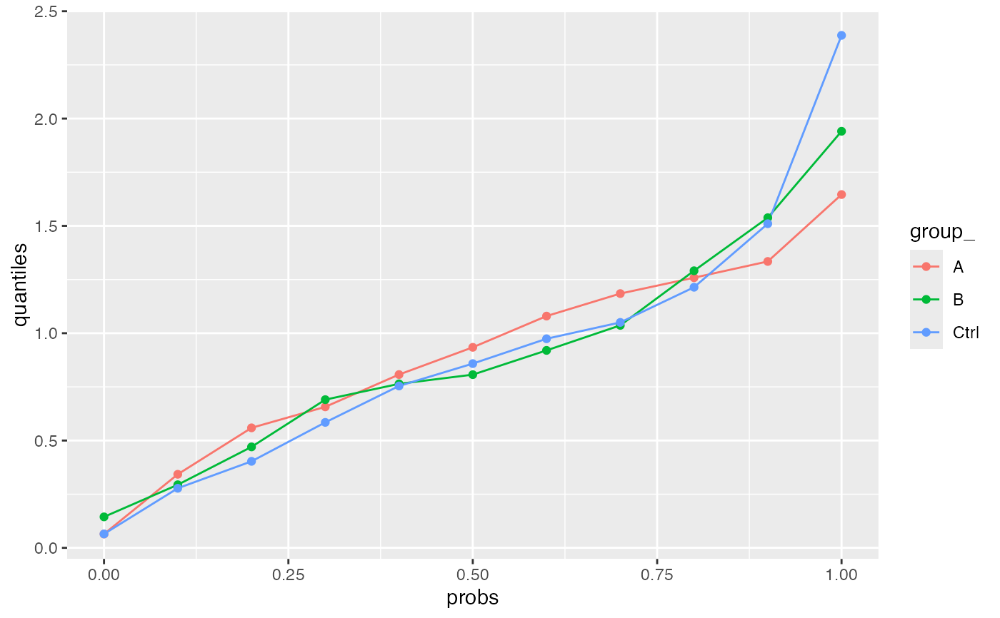

R/tidyMS_stats.R
summarize_stats.RdCompute mean, sd, and CV for all Peptides, or proteins, for all interactions and all samples.
Compute mean, sd, and CV for e.g. Peptides, or proteins, for all samples.
summarize stats output (compute quantiles)
data.frame
AnalysisConfiguration
result of running `summarize_stats`
summarize either sd or CV
for which quantiles 10, 20 etc.
also compute for all samples (default), or only of conditions (set to FALSE)
Other stats:
INTERNAL_FUNCTIONS_BY_FAMILY,
lfq_power_t_test_proteins(),
lfq_power_t_test_quantiles_V2(),
lfq_power_t_test_quantiles(),
plot_stat_density_median(),
plot_stat_density(),
plot_stat_violin_median(),
plot_stat_violin(),
plot_stdv_vs_mean(),
pooled_V2()
Other stats:
INTERNAL_FUNCTIONS_BY_FAMILY,
lfq_power_t_test_proteins(),
lfq_power_t_test_quantiles_V2(),
lfq_power_t_test_quantiles(),
plot_stat_density_median(),
plot_stat_density(),
plot_stat_violin_median(),
plot_stat_violin(),
plot_stdv_vs_mean(),
pooled_V2()
Other stats:
INTERNAL_FUNCTIONS_BY_FAMILY,
lfq_power_t_test_proteins(),
lfq_power_t_test_quantiles_V2(),
lfq_power_t_test_quantiles(),
plot_stat_density_median(),
plot_stat_density(),
plot_stat_violin_median(),
plot_stat_violin(),
plot_stdv_vs_mean(),
pooled_V2()
bb <- prolfqua_data('data_ionstar')$normalized()
config <- bb$config
data <- bb$data
res1 <- summarize_stats(data, config)
#> completing cases
head(res1)
#> # A tibble: 6 × 8
#> protein_Id peptide_Id dilution. n not_na sd var mean
#> <chr> <chr> <chr> <int> <int> <dbl> <dbl> <dbl>
#> 1 CON__P01030~9~NA AELADQAASWLTR a 4 1 NA NA -1.73
#> 2 CON__P01030~9~NA AELADQAASWLTR b 4 1 NA NA -2.40
#> 3 CON__P01030~9~NA AELADQAASWLTR c 4 0 NA NA NaN
#> 4 CON__P01030~9~NA AELADQAASWLTR d 4 0 NA NA NaN
#> 5 CON__P01030~9~NA AELADQAASWLTR e 4 2 0.647 0.419 -2.21
#> 6 CON__P01030~9~NA ILSLAQDQVGGSAEK a 4 4 0.499 0.249 -0.973
#View(res1)
d <- res1 |> dplyr::filter(protein_Id == "CON__P01030~9~NA" & peptide_Id == "AELADQAASWLTR")
head(d)
#> # A tibble: 5 × 8
#> protein_Id peptide_Id dilution. n not_na sd var mean
#> <chr> <chr> <chr> <int> <int> <dbl> <dbl> <dbl>
#> 1 CON__P01030~9~NA AELADQAASWLTR a 4 1 NA NA -1.73
#> 2 CON__P01030~9~NA AELADQAASWLTR b 4 1 NA NA -2.40
#> 3 CON__P01030~9~NA AELADQAASWLTR c 4 0 NA NA NaN
#> 4 CON__P01030~9~NA AELADQAASWLTR d 4 0 NA NA NaN
#> 5 CON__P01030~9~NA AELADQAASWLTR e 4 2 0.647 0.419 -2.21
d <- res1 |> dplyr::filter(protein_Id == "CON__Q3SZR3~50~NA" & peptide_Id == "EHFVDLLLSK")
head(d)
#> # A tibble: 5 × 8
#> protein_Id peptide_Id dilution. n not_na sd var mean
#> <chr> <chr> <chr> <int> <int> <dbl> <dbl> <dbl>
#> 1 CON__Q3SZR3~50~NA EHFVDLLLSK a 4 1 NA NA -2.22
#> 2 CON__Q3SZR3~50~NA EHFVDLLLSK b 4 1 NA NA -2.90
#> 3 CON__Q3SZR3~50~NA EHFVDLLLSK c 4 3 0.319 0.102 -2.75
#> 4 CON__Q3SZR3~50~NA EHFVDLLLSK d 4 1 NA NA -2.72
#> 5 CON__Q3SZR3~50~NA EHFVDLLLSK e 4 0 NA NA NaN
#CON__P02769~18~NA VHKECCHGDLLECADDR
d <- res1 |> dplyr::filter(protein_Id == "CON__P02769~18~NA" & peptide_Id == "VHKECCHGDLLECADDR")
res1 |> dplyr::filter(dilution. == "pooled")
#> # A tibble: 0 × 8
#> # … with 8 variables: protein_Id <chr>, peptide_Id <chr>, dilution. <chr>,
#> # n <int>, not_na <int>, sd <dbl>, var <dbl>, mean <dbl>
bb <- prolfqua_data('data_ionstar')$normalized()
config <- bb$config
data <- bb$data
res1 <- summarize_stats_all(data, config)
#> completing cases
d <- res1 |> dplyr::filter(protein_Id == "CON__P01030~9~NA" & peptide_Id == "AELADQAASWLTR")
head(d)
#> # A tibble: 1 × 8
#> protein_Id peptide_Id n not_na sd var mean dilution.
#> <chr> <chr> <int> <int> <dbl> <dbl> <dbl> <chr>
#> 1 CON__P01030~9~NA AELADQAASWLTR 20 4 0.470 0.470 -2.14 All
d <- res1 |> dplyr::filter(protein_Id == "CON__Q3SZR3~50~NA" & peptide_Id == "EHFVDLLLSK")
head(d)
#> # A tibble: 1 × 8
#> protein_Id peptide_Id n not_na sd var mean dilution.
#> <chr> <chr> <int> <int> <dbl> <dbl> <dbl> <chr>
#> 1 CON__Q3SZR3~50~NA EHFVDLLLSK 20 6 0.311 0.311 -2.68 All
#CON__P02769~18~NA VHKECCHGDLLECADDR
d <- res1 |> dplyr::filter(protein_Id == "CON__P02769~18~NA" & peptide_Id == "VHKECCHGDLLECADDR")
res1 |> dplyr::filter(dilution. == "pooled")
#> # A tibble: 0 × 8
#> # … with 8 variables: protein_Id <chr>, peptide_Id <chr>, n <int>,
#> # not_na <int>, sd <dbl>, var <dbl>, mean <dbl>, dilution. <chr>
library(ggplot2)
bb1 <- prolfqua_data('data_ionstar')$filtered()
#> Column added : nr_peptide_Id_IN_protein_Id
config <- bb1$config$clone( deep = TRUE)
data <- bb1$data
stats_res <- summarize_stats(data, config)
#> completing cases
summarize_stats_quantiles(stats_res, config)
#> $long
#> # A tibble: 25 × 3
#> # Groups: dilution. [5]
#> dilution. probs quantiles
#> <chr> <dbl> <dbl>
#> 1 a 0.1 1238943.
#> 2 a 0.25 2401401.
#> 3 a 0.5 5128504.
#> 4 a 0.75 15058063.
#> 5 a 0.9 47610913.
#> 6 b 0.1 1207982.
#> 7 b 0.25 2212925.
#> 8 b 0.5 5188453.
#> 9 b 0.75 14320245.
#> 10 b 0.9 47873314.
#> # … with 15 more rows
#>
#> $wide
#> # A tibble: 5 × 6
#> probs a b c d e
#> <dbl> <dbl> <dbl> <dbl> <dbl> <dbl>
#> 1 0.1 1238943. 1207982. 1072003. 1191353. 1239760.
#> 2 0.25 2401401. 2212925. 2040999. 2116310. 2331274.
#> 3 0.5 5128504. 5188453. 4919957. 4785827. 5018632.
#> 4 0.75 15058063. 14320245. 14256412. 14254286. 14328837.
#> 5 0.9 47610913. 47873314. 45552582. 49583057. 49084314.
#>
summarize_stats_quantiles(stats_res, config, stats = "CV")
#> $long
#> # A tibble: 25 × 3
#> # Groups: dilution. [5]
#> dilution. probs quantiles
#> <chr> <dbl> <dbl>
#> 1 a 0.1 9.14
#> 2 a 0.25 12.6
#> 3 a 0.5 17.2
#> 4 a 0.75 25.7
#> 5 a 0.9 41.1
#> 6 b 0.1 8.56
#> 7 b 0.25 13.0
#> 8 b 0.5 18.3
#> 9 b 0.75 27.5
#> 10 b 0.9 40.3
#> # … with 15 more rows
#>
#> $wide
#> # A tibble: 5 × 6
#> probs a b c d e
#> <dbl> <dbl> <dbl> <dbl> <dbl> <dbl>
#> 1 0.1 9.14 8.56 7.97 8.60 8.24
#> 2 0.25 12.6 13.0 12.3 12.2 13.1
#> 3 0.5 17.2 18.3 18.3 18.3 19.8
#> 4 0.75 25.7 27.5 27.8 28.8 28.7
#> 5 0.9 41.1 40.3 43.8 40.8 42.7
#>
stats_res
#> # A tibble: 6,445 × 9
#> protein_Id peptide_Id dilution. n not_na sd var mean CV
#> <chr> <chr> <chr> <int> <int> <dbl> <dbl> <dbl> <dbl>
#> 1 CON__P0103… AELADQAAS… a 4 1 NA NA 7982100 NA
#> 2 CON__P0103… AELADQAAS… b 4 1 NA NA 4949600 NA
#> 3 CON__P0103… AELADQAAS… c 4 0 NA NA NaN NA
#> 4 CON__P0103… AELADQAAS… d 4 0 NA NA NaN NA
#> 5 CON__P0103… AELADQAAS… e 4 2 3.21e6 1.03e13 5288200 60.6
#> 6 CON__P0103… ILSLAQDQV… a 4 4 4.93e6 2.43e13 13181700 37.4
#> 7 CON__P0103… ILSLAQDQV… b 4 4 6.58e6 4.33e13 12526225 52.6
#> 8 CON__P0103… ILSLAQDQV… c 4 4 3.63e6 1.32e13 10191650 35.6
#> 9 CON__P0103… ILSLAQDQV… d 4 4 2.94e6 8.67e12 8863225 33.2
#> 10 CON__P0103… ILSLAQDQV… e 4 4 3.83e6 1.47e13 9253350 41.4
#> # … with 6,435 more rows
bb <- prolfqua_data('data_ionstar')$normalized()
config <- bb$config$clone(deep = TRUE)
data <- bb$data
config$table$getWorkIntensity()
#> [1] "transformedIntensity"
stats_res <- summarize_stats(data, config)
#> completing cases
summarize_stats_quantiles(stats_res, config)
#> $long
#> # A tibble: 25 × 3
#> # Groups: dilution. [5]
#> dilution. probs quantiles
#> <chr> <dbl> <dbl>
#> 1 a 0.1 0.0675
#> 2 a 0.25 0.117
#> 3 a 0.5 0.195
#> 4 a 0.75 0.330
#> 5 a 0.9 0.544
#> 6 b 0.1 0.0722
#> 7 b 0.25 0.122
#> 8 b 0.5 0.200
#> 9 b 0.75 0.338
#> 10 b 0.9 0.571
#> # … with 15 more rows
#>
#> $wide
#> # A tibble: 5 × 6
#> probs a b c d e
#> <dbl> <dbl> <dbl> <dbl> <dbl> <dbl>
#> 1 0.1 0.0675 0.0722 0.0728 0.0747 0.0714
#> 2 0.25 0.117 0.122 0.114 0.119 0.118
#> 3 0.5 0.195 0.200 0.192 0.199 0.195
#> 4 0.75 0.330 0.338 0.319 0.330 0.332
#> 5 0.9 0.544 0.571 0.567 0.534 0.558
#>
summarize_stats_quantiles(stats_res, config, stats = "sd")
#> $long
#> # A tibble: 25 × 3
#> # Groups: dilution. [5]
#> dilution. probs quantiles
#> <chr> <dbl> <dbl>
#> 1 a 0.1 0.0675
#> 2 a 0.25 0.117
#> 3 a 0.5 0.195
#> 4 a 0.75 0.330
#> 5 a 0.9 0.544
#> 6 b 0.1 0.0722
#> 7 b 0.25 0.122
#> 8 b 0.5 0.200
#> 9 b 0.75 0.338
#> 10 b 0.9 0.571
#> # … with 15 more rows
#>
#> $wide
#> # A tibble: 5 × 6
#> probs a b c d e
#> <dbl> <dbl> <dbl> <dbl> <dbl> <dbl>
#> 1 0.1 0.0675 0.0722 0.0728 0.0747 0.0714
#> 2 0.25 0.117 0.122 0.114 0.119 0.118
#> 3 0.5 0.195 0.200 0.192 0.199 0.195
#> 4 0.75 0.330 0.338 0.319 0.330 0.332
#> 5 0.9 0.544 0.571 0.567 0.534 0.558
#>
stats_res <- summarize_stats(data, config)
#> completing cases
xx <- summarize_stats_quantiles(stats_res, config, probs = seq(0,1,by = 0.1))
ggplot2::ggplot(xx$long, aes(x = probs, y = quantiles, color = dilution.)) + geom_line() + geom_point()
